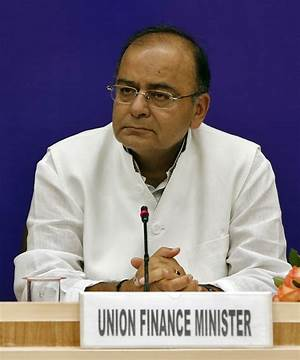

<!DOCTYPE html>
<html lang="en">
<head>
    <meta charset="UTF-8">
    <meta name="viewport" content="width=device-width, initial-scale=1.0">
    <meta http-equiv="X-UA-Compatible" content="ie=edge">
    <link rel="stylesheet" href="css/main.css">
    <title>Tribute Page</title>
</head>
<body>
    
</body>
</html>
<div id="main">
    <h1 id="title">Arun Jaitley</h1>
    <h4> Indian politician and attorney</h4>
   
    <div id="img-div">
      </img>
  
  <p id="img-caption"><strong>Arun Jaitley-the Minister of Finance and Corporate Affairs of the Government of India from 2014 to 2019.</strong></p>
   </div>
  
  <div>
    <p id="tribute-info"><br><br>Arun Jaitley (28 December 1952 – 24 August 2019) was an Indian politician and attorney. A member of the Bharatiya Janata Party, Jaitley served as the Minister of Finance and Corporate Affairs of the Government of India from 2014 to 2019.Jaitley previously held the cabinet portfolios of Finance, Defence, Corporate Affairs, Commerce and Industry, and Law and Justice in the Vajpayee government and Narendra Modi government. From 2009 to 2014, he served as the Leader of the Opposition in the Rajya Sabha.He was a Senior Advocate of the Supreme Court of India.He oversaw the introduction of the Goods and Services Tax which brought the country under one GST regime, demonetization, merger of Railway budget with general budget and introduction of Insolvency and Bankruptcy Code. <br></br>On 26 May 2014, Jaitley was selected by newly elected Prime Minister Narendra Modi to be the Minister of Finance, the Minister for Corporate Affairs and the Minister of Defence, in his cabinet. Analysts cited Jaitley's "part-time" focus on defence as a simple continuation of the policies of the previous government.According to a WikiLeaks cable by Robert Blake, the Charge at the US Embassy, to his government, when pressed on the question of Hindutva, Jaitley had argued that Hindu nationalism "will always be a talking point" for the BJP and characterised this as an opportunistic issue. Jaitley later clarified that "the use of the word opportunistic in reference to nationalism or Hindu nationalism is neither my view nor my language. It could be the diplomat's own usage.<br></br>Arun Jaitley married Sangeeta, daughter of former Jammu and Kashmir finance minister Girdhari Lal Dogra, on 24 May 1982. They have two children, Rohan and Sonali; the latter married Jaiyesh Bakhshi.Both his children are lawyers. He had two siblings. Delhi's Feroz Shah Kotla Stadium is to be renamed as Arun Jaitley Stadium on 12 September 2019 at a function at Jawaharlal Nehru Stadium.Jaitley suffered from a series of health-related issues and underwent multiple surgeries leading into his deteriorating health and subsequent death in 2019. In 2005, he underwent a coronary artery bypass surgery after he was diagnosed of high blood pressure. In 2014, when he weighed 117 kilograms (258 lb), a gastric bypass surgery was performed on him aimed at reducing his weight. Doctors confirmed that Jaitley had been "suffering from diabetes for nearly two decades" then, and that the said procedure was the best option for patients suffering from "uncontrolled diabetes". In May 2018, he underwent a kidney transplant surgery.</br></br></p>
  <div>
  <a href ="https://en.wikipedia.org/wiki/Arun_Jaitley" target="_blank" id="tribute-link">Read more...</a>
  </div>
  </div>
  </div>